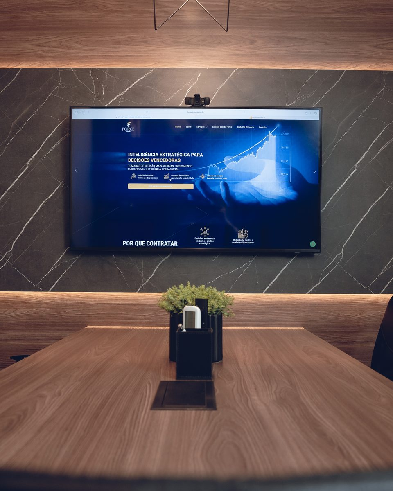

Recuperação Judicial & Reestruturação
Condução técnica sob a Lei 11.101/2005: continuidade da operação, reestruturação de passivos, negociação com credores e bancos, e venda de UPI. Entenda como funciona a recuperação judicial →
Boutique de reestruturação empresarial · SC, atuação nacional
2.466 empresas entraram em recuperação judicial em 2025, recorde da série histórica da Serasa Experian. A diferença entre reestruturar e perder a empresa está na clareza do número e no tempo para decidir.
100% dos planos aprovados · +R$ 1 bilhão reestruturados · Reconhecida pela Exame 2025
Planos de recuperação aprovados
Passivos reestruturados
Anos de experiência dos sócios
Ranking Negócios em Expansão
Serviços

Condução técnica sob a Lei 11.101/2005: continuidade da operação, reestruturação de passivos, negociação com credores e bancos, e venda de UPI. Entenda como funciona a recuperação judicial →
Estancar a perda, recuperar margem e giro, e profissionalizar a gestão com indicadores que a liderança lê em segundos. Veja como funciona um turnaround →
Renegociação de dívida, redesenho de estrutura de capital e de custos, e correção dos processos que drenam o caixa. O que é reestruturação empresarial →
Estrutura de decisão, controles e separação entre família e operação, para a empresa sobreviver à própria sucessão.
Uma única fonte de verdade para o número: do dado bruto ao painel que sustenta decisão de board. Explore as demos do BI da Force →
Viabilidade, valuation e modelagem para fundamentar decisão de investidor, credor e conselho.
Capital exposto e a decisão entre sair ou dobrar a aposta? Conduzimos a reestruturação que faz o investimento voltar a gerar resultado. A empresa contrata. O investidor ganha previsibilidade e um número em que dá para confiar.
Artigos
Recuperação judicial, reestruturação empresarial e turnaround explicados por quem executa. Dado oficial, leitura preditiva e zero achismo.
O guia completo do processo: requisitos, stay period, plano, assembleia de credores e o que decide entre aprovar e convolar em falência.
Ler o artigo → Gestão de criseOs avisos que aparecem no número de 6 a 12 meses antes da crise aberta, e o que fazer em cada estágio para manter o poder de decisão.
Ler o artigo → ReestruturaçãoO instrumento que homologa acordo com credores sem o peso do processo completo. Quóruns, limites e comparação direta com a recuperação judicial.
Ler o artigo →Quando o passivo não cabe mais no caixa e a negociação direta com credores travou. Quanto antes a empresa procura ajuda, mais alternativas existem: recuperação extrajudicial, renegociação estruturada ou turnaround. O trabalho começa sempre pelo diagnóstico dos sinais, não pelo pedido.
A recuperação judicial suspende execuções por 180 dias e vincula todos os credores sujeitos ao processo. A recuperação extrajudicial homologa um acordo negociado antes, com adesão de mais da metade dos créditos de cada espécie envolvida. É mais rápida e menos custosa, mas exige negociação prévia madura.
Sim. A Force é uma boutique catarinense com sedes em Itajaí e Chapecó e atuação nacional, ao lado de fundos, bancos, administradores judiciais e o time da empresa.
Por um diagnóstico de causa-raiz: caixa, dívida, margem e governança. Antes de qualquer proposta, identificamos o que de fato está drenando o resultado e onde está a alavanca de virada. A primeira conversa já é diagnóstica, não comercial.
Depende do estágio da crise e da complexidade do passivo. Em recuperação judicial, a mediana até a aprovação do plano é de 407 dias em varas especializadas, segundo o Observatório da Insolvência da ABJ. O método não muda: estabilizar o caixa primeiro, plano depois, resultado medido em prazo. Veja as etapas do processo.
Empresas médias e grandes em decisão crítica, que precisam de diagnóstico honesto e execução dentro de casa. O histórico soma mais de R$ 1 bilhão em passivos reestruturados, de mandatos de recuperação judicial relevantes a turnarounds operacionais.